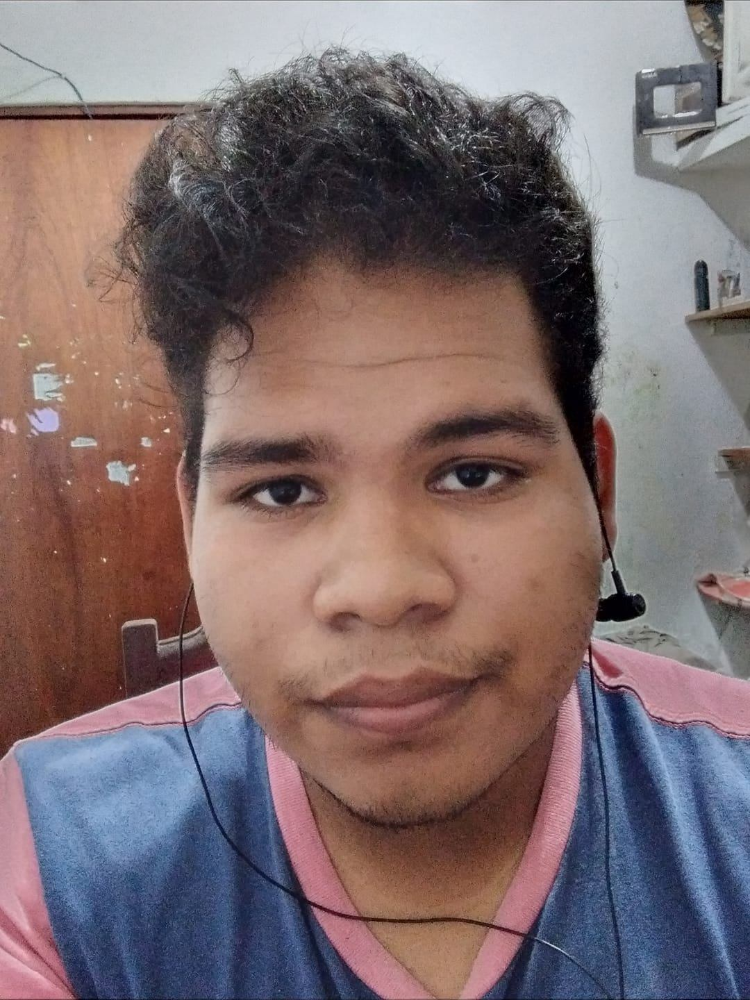
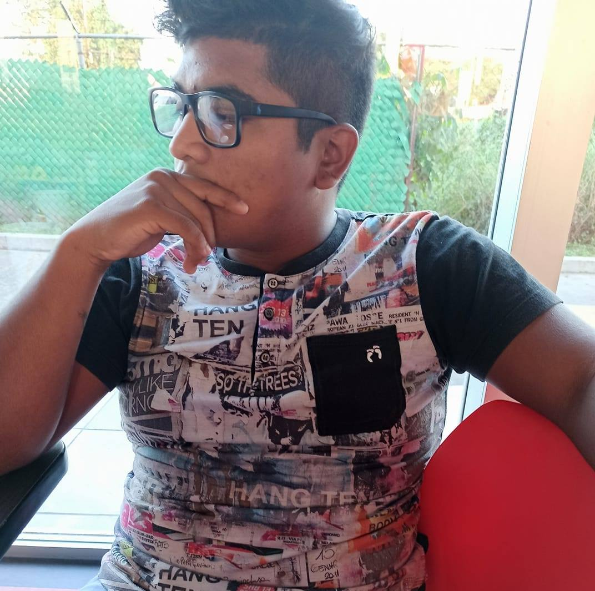
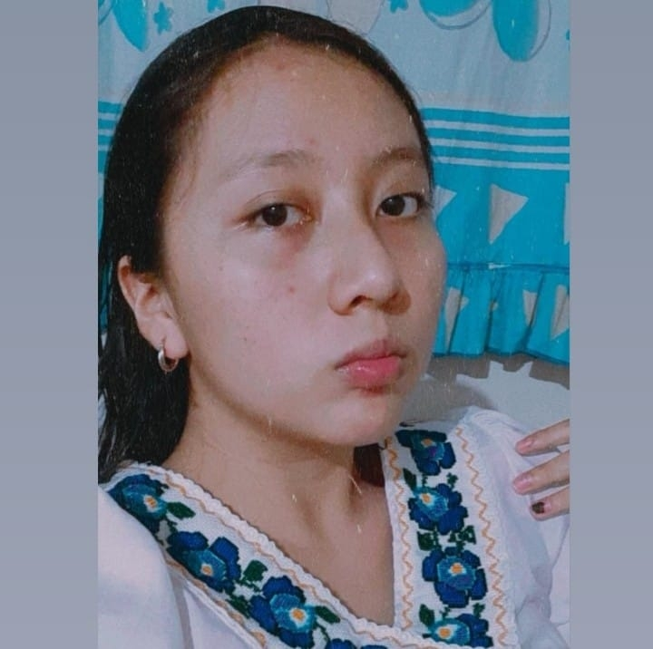

Contrataciones

Alejandro Sánchez Olmedo.
correo: alexolmedo@live.com.mx.
WhatsApp.
Facebook.

Heriberto Salomón Pérez.
correo: erick17.salomón@gmail.com.
WhatsApp.
Facebook.
Marco Antonio Paredes de Jesús.
correo: m.paredes1999@gmail.com.
WhatsApp.
Facebook.

Jeanette Zurisaddai José Jacinto.
correo: jeanettejosejacinto@gmail.com.
WhatsApp.
Facebook.